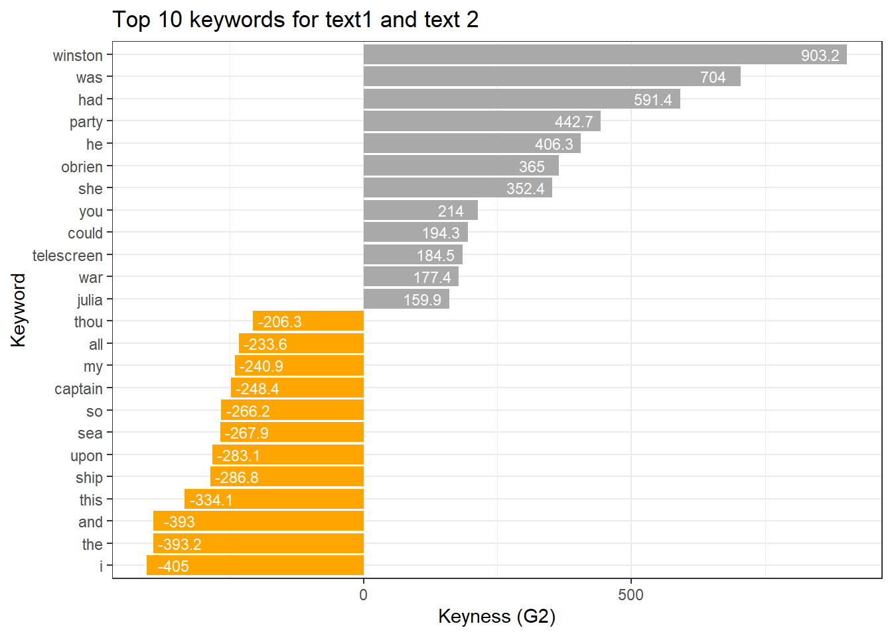

Keyness and Keyword Analysis in R
Martin Schweinberger

Introduction
This tutorial introduces keyness and keyword analysis with R and shows how to extract and visualize keywords.1

This tutorial is aimed at beginners and intermediate users of R with the aim of showcasing how to extract keywords from and analyze keywords in textual data using R. The aim is not to provide a fully-fledged analysis but rather to show and exemplify selected useful methods associated with keyness and keyword analysis.
To be able to follow this tutorial, we suggest you check out and
familiarize yourself with the content of the following R
Basics tutorials:
- Getting started with R
- Loading, saving, and generating data in R
- String Processing in R
- Regular Expressions in R
Click here2 to
download the entire R Notebook for this
tutorial.

Click
here
to open a Jupyter notebook that allows you to follow this tutorial
interactively. This means that you can execute, change, and edit the
code used in this tutorial to help you better understand how the code
shown here works (make sure you run all code chunks in the order in
which they appear - otherwise you will get an error).
KEYWORD TOOL
Click on this  badge to
open an notebook-based tool
badge to
open an notebook-based tool
that calculates keyness
statistics and allows you to download the results.
How can you detect keywords, i.e. words that are characteristic of a
text (or a collection of texts)?
This tutorial aims to show how you can answer this question.
Preparation and session set up
This tutorial is based on R. If you have not installed R or are new to it, you will find an introduction to and more information how to use R here. For this tutorials, we need to install certain packages from an R library so that the scripts shown below are executed without errors. Before turning to the code below, please install the packages by running the code below this paragraph. If you have already installed the packages mentioned below, then you can skip ahead and ignore this section. To install the necessary packages, simply run the following code - it may take some time (between 1 and 5 minutes to install all of the libraries so you do not need to worry if it takes some time).
# set options
options(stringsAsFactors = F)
options(scipen = 999)
options(max.print=1000)
# install packages
install.packages("flextable")
install.packages("Matrix")
install.packages("quanteda")
install.packages("quanteda.textstats")
install.packages("quanteda.textplots")
install.packages("dplyr")
install.packages("stringr")
install.packages("tm")
install.packages("sna")
install.packages("tidytext")
install.packages("ggplot2")
# install klippy for copy-to-clipboard button in code chunks
install.packages("remotes")
remotes::install_github("rlesur/klippy")Next, we load the packages.
# load packages
library(flextable)
library(Matrix)
library(quanteda)
library(quanteda.textstats)
library(quanteda.textplots)
library(dplyr)
library(stringr)
library(tm)
library(sna)
library(ggplot2)
# activate klippy for copy-to-clipboard button
klippy::klippy()Keywords
Keywords play a pivotal role in text analysis, serving as distinctive terms that hold particular significance within a given text, context, or collection. These words stand out due to their heightened frequency in a specific text or context, setting them apart from their occurrence in another. In essence, keywords are linguistic markers that encapsulate the essence or topical focus of a document or dataset. The process of identifying keywords involves a methodology akin to the one employed for detecting collocations using kwics. This entails comparing the use of a particular word in corpus A, against its use in corpus B. By discerning the frequency disparities, we gain valuable insights into the salient terms that contribute significantly to the unique character and thematic emphasis of a given text or context.
LADAL TOOL
Click on this  badge to
open an notebook-based tool
badge to
open an notebook-based tool
that calculates keyness measures and
allows you to download the results.
Dimensions of keyness
Before we start with the practical part of this tutorial, it is important to talk about the different dimensions of keyness (see Sönning 2023).
Keyness analysis identifies typical items in a discourse domain, where typicalness traditionally relates to frequency of occurrence. The emphasis is on items used more frequently in the target corpus compared to a reference corpus. Egbert and Biber (2019) expanded this notion, highlighting two criteria for typicalness: content-distinctiveness and content-generalizability.
Content-distinctiveness refers to an item’s association with the domain and its topical relevance.
Content-generalizability pertains to an item’s widespread usage across various texts within the domain.
These criteria bridge traditional keyness approaches with broader linguistic perspectives, emphasizing both the distinctiveness and generalizability of key items within a corpus.
Following Sönning (2023), we adopt Egbert and Biber (2019) keyness criteria, distinguishing between frequency-oriented and dispersion-oriented approaches to assess keyness. These perspectives capture distinct, linguistically meaningful attributes of typicalness. We also differentiate between keyness features inherent to the target variety and those that emerge from comparing it to a reference variety. This four-way classification, detailed in the table below, links methodological choices to the linguistic meaning conveyed by quantitative measures. Typical items exhibit a sufficiently high occurrence rate to be discernible in the target variety, with discernibility measured solely within the target corpus. Key items are also distinct, being used more frequently than in reference domains of language use. While discernibility and distinctiveness both rely on frequency, they measure different aspects of typicalness.
Analysis | Frequency.oriented | Dispersion.oriented |
|---|---|---|
Target variety in isolation | Discernibility of item in the target variety | Generality across texts in the target variety |
Comparison to reference variety | Distinctiveness relative to the reference variety | Comparative generality relative to the reference variety |
The second aspect of keyness involves an item’s dispersion across texts in the target domain, indicating its widespread use. A typical item should appear evenly across various texts within the target domain, reflecting its generality. This breadth of usage can be compared to its occurrence in the reference domain, termed as comparative generality. Therefore, a key item should exhibit greater prevalence across target texts compared to those in the reference domain.
Identifying keywords
Here, we focus on a frequency-based approach that assesses distinctiveness relative to the reference variety. To identify these keywords, we can follow the procedure we have used to identify collocations using kwics - the idea is essentially identical: we compare the use of a word in a target corpus A to its use in a reference corpus.
To determine if a token is a keyword and if it occurs significantly more frequently in a target corpus compared to a reference corpus, we use the following information (that is provided by the table above):
O11 = Number of times wordx occurs in
target corpusO12 = Number of times wordx occurs in
reference corpus(withouttarget corpus)O21 = Number of times other words occur in
target corpusO22 = Number of times other words occur in
reference corpus
Example:
| target corpus | reference corpus | ||
|---|---|---|---|
| token | O11 | O12 | = R1 |
| other tokens | O21 | O22 | = R2 |
| = C1 | = C2 | = N |
We begin with loading two texts (text1 is our target and text2 is our reference).
# load data
text1 <- base::readRDS(url("https://slcladal.github.io/data/orwell.rda", "rb")) %>%
paste0(collapse = " ")
text2 <- base::readRDS(url("https://slcladal.github.io/data/melville.rda", "rb")) %>%
paste0(collapse = " "). |
|---|
1984 George Orwell Part 1, Chapter 1 It was a bright cold day in April, and the clocks were striking thirteen. Winston Smith, his chin nuzzled into his breast in an effort to escape the vile wind, sli |
As you can see, text1 is George Orwell’s 1984.
. |
|---|
MOBY-DICK; or, THE WHALE. By Herman Melville CHAPTER 1. Loomings. Call me Ishmael. Some years ago—never mind how long precisely—having little or no money in my purse, and nothing particular to interes |
The table shows that text2 is Herman Melville’s Moby Dick.
After loading the two texts, we create a frequency table of first text.
text1_words <- text1 %>%
# remove non-word characters
stringr::str_remove_all("[^[:alpha:] ]") %>%
# convert to lower
tolower() %>%
# tokenize the corpus files
quanteda::tokens(remove_punct = T,
remove_symbols = T,
remove_numbers = T) %>%
# unlist the tokens to create a data frame
unlist() %>%
as.data.frame() %>%
# rename the column to 'token'
dplyr::rename(token = 1) %>%
# group by 'token' and count the occurrences
dplyr::group_by(token) %>%
dplyr::summarise(n = n()) %>%
# add column stating where the frequency list is 'from'
dplyr::mutate(type = "text1")Now, we create a frequency table of second text.
text2_words <- text2 %>%
# remove non-word characters
stringr::str_remove_all("[^[:alpha:] ]") %>%
# convert to lower
tolower() %>%
# tokenize the corpus files
quanteda::tokens(remove_punct = T,
remove_symbols = T,
remove_numbers = T) %>%
# unlist the tokens to create a data frame
unlist() %>%
as.data.frame() %>%
# rename the column to 'token'
dplyr::rename(token = 1) %>%
# group by 'token' and count the occurrences
dplyr::group_by(token) %>%
dplyr::summarise(n = n()) %>%
# add column stating where the frequency list is 'from'
dplyr::mutate(type = "text2")In a next step, we combine the tables.
texts_df <- dplyr::left_join(text1_words, text2_words, by = c("token")) %>%
# rename columns and select relevant columns
dplyr::rename(text1 = n.x,
text2 = n.y) %>%
dplyr::select(-type.x, -type.y) %>%
# replace NA values with 0 in 'corpus' and 'kwic' columns
tidyr::replace_na(list(text1 = 0, text2 = 0))token | text1 | text2 |
|---|---|---|
a | 2,390 | 4,536 |
aaronson | 8 | 0 |
aback | 2 | 2 |
abandon | 3 | 3 |
abandoned | 4 | 7 |
abashed | 1 | 2 |
abbreviated | 1 | 0 |
abiding | 1 | 1 |
ability | 1 | 1 |
abject | 3 | 0 |
We now calculate the frequencies of the observed and expected frequencies as well as the row and column totals.
texts_df %>%
dplyr::mutate(text1 = as.numeric(text1),
text2 = as.numeric(text2)) %>%
dplyr::mutate(C1 = sum(text1),
C2 = sum(text2),
N = C1 + C2) %>%
dplyr::rowwise() %>%
dplyr::mutate(R1 = text1+text2,
R2 = N - R1,
O11 = text1,
O11 = ifelse(O11 == 0, O11+0.1, O11),
O12 = R1-O11,
O21 = C1-O11,
O22 = C2-O12) %>%
dplyr::mutate(E11 = (R1 * C1) / N,
E12 = (R1 * C2) / N,
E21 = (R2 * C1) / N,
E22 = (R2 * C2) / N) %>%
dplyr::select(-text1, -text2) -> stats_tb2token | C1 | C2 | N | R1 | R2 | O11 | O12 | O21 | O22 | E11 | E12 | E21 | E22 |
|---|---|---|---|---|---|---|---|---|---|---|---|---|---|
a | 94,677 | 169,163 | 263,840 | 6,926 | 256,914 | 2,390 | 4,536 | 92,287 | 164,627 | 2,485.3430185 | 4,440.6569815 | 92,191.66 | 164,722.3 |
aaronson | 94,677 | 169,163 | 263,840 | 8 | 263,832 | 8 | 0 | 94,669 | 169,163 | 2.8707398 | 5.1292602 | 94,674.13 | 169,157.9 |
aback | 94,677 | 169,163 | 263,840 | 4 | 263,836 | 2 | 2 | 94,675 | 169,161 | 1.4353699 | 2.5646301 | 94,675.56 | 169,160.4 |
abandon | 94,677 | 169,163 | 263,840 | 6 | 263,834 | 3 | 3 | 94,674 | 169,160 | 2.1530549 | 3.8469451 | 94,674.85 | 169,159.2 |
abandoned | 94,677 | 169,163 | 263,840 | 11 | 263,829 | 4 | 7 | 94,673 | 169,156 | 3.9472673 | 7.0527327 | 94,673.05 | 169,155.9 |
abashed | 94,677 | 169,163 | 263,840 | 3 | 263,837 | 1 | 2 | 94,676 | 169,161 | 1.0765274 | 1.9234726 | 94,675.92 | 169,161.1 |
abbreviated | 94,677 | 169,163 | 263,840 | 1 | 263,839 | 1 | 0 | 94,676 | 169,163 | 0.3588425 | 0.6411575 | 94,676.64 | 169,162.4 |
abiding | 94,677 | 169,163 | 263,840 | 2 | 263,838 | 1 | 1 | 94,676 | 169,162 | 0.7176850 | 1.2823150 | 94,676.28 | 169,161.7 |
ability | 94,677 | 169,163 | 263,840 | 2 | 263,838 | 1 | 1 | 94,676 | 169,162 | 0.7176850 | 1.2823150 | 94,676.28 | 169,161.7 |
abject | 94,677 | 169,163 | 263,840 | 3 | 263,837 | 3 | 0 | 94,674 | 169,163 | 1.0765274 | 1.9234726 | 94,675.92 | 169,161.1 |
We can now calculate the keyness measures.
stats_tb2 %>%
# determine number of rows
dplyr::mutate(Rws = nrow(.)) %>%
# work row-wise
dplyr::rowwise() %>%
# calculate fishers' exact test
dplyr::mutate(p = as.vector(unlist(fisher.test(matrix(c(O11, O12, O21, O22),
ncol = 2, byrow = T))[1]))) %>%
# extract descriptives
dplyr::mutate(ptw_target = O11/C1*1000,
ptw_ref = O12/C2*1000) %>%
# extract x2 statistics
dplyr::mutate(X2 = (O11-E11)^2/E11 + (O12-E12)^2/E12 + (O21-E21)^2/E21 + (O22-E22)^2/E22) %>%
# extract keyness measures
dplyr::mutate(phi = sqrt((X2 / N)),
MI = log2(O11 / E11),
t.score = (O11 - E11) / sqrt(O11),
PMI = log2( (O11 / N) / ((O11+O12) / N) *
((O11+O21) / N) ),
DeltaP = (O11 / R1) - (O21 / R2),
LogOddsRatio = log(((O11 + 0.5) * (O22 + 0.5)) / ( (O12 + 0.5) * (O21 + 0.5) )),
G2 = 2 * ((O11+ 0.001) * log((O11+ 0.001) / E11) + (O12+ 0.001) * log((O12+ 0.001) / E12) + O21 * log(O21 / E21) + O22 * log(O22 / E22)),
# traditional keyness measures
RateRatio = ((O11+ 0.001)/(C1*1000)) / ((O12+ 0.001)/(C2*1000)),
RateDifference = (O11/(C1*1000)) - (O12/(C2*1000)),
DifferenceCoefficient = RateDifference / sum((O11/(C1*1000)), (O12/(C2*1000))),
OddsRatio = ((O11 + 0.5) * (O22 + 0.5)) / ( (O12 + 0.5) * (O21 + 0.5) ),
LLR = 2 * (O11 * (log((O11 / E11)))),
RDF = abs((O11 / C1) - (O12 / C2)),
PDiff = abs(ptw_target - ptw_ref) / ((ptw_target + ptw_ref) / 2) * 100,
SignedDKL = sum(ifelse(O11 > 0, O11 * log(O11 / ((O11 + O12) / 2)), 0) - ifelse(O12 > 0, O12 * log(O12 / ((O11 + O12) / 2)), 0))) %>%
# determine Bonferroni corrected significance
dplyr::mutate(Sig_corrected = dplyr::case_when(p / Rws > .05 ~ "n.s.",
p / Rws > .01 ~ "p < .05*",
p / Rws > .001 ~ "p < .01**",
p / Rws <= .001 ~ "p < .001***",
T ~ "N.A.")) %>%
# round p-value
dplyr::mutate(p = round(p, 5),
type = ifelse(E11 > O11, "antitype", "type"),
phi = ifelse(E11 > O11, -phi, phi),
G2 = ifelse(E11 > O11, -G2, G2)) %>%
# filter out non significant results
dplyr::filter(Sig_corrected != "n.s.") %>%
# arrange by G2
dplyr::arrange(-G2) %>%
# remove superfluous columns
dplyr::select(-any_of(c("TermCoocFreq", "AllFreq", "NRows",
"R1", "R2", "C1", "C2", "E12", "E21",
"E22", "upp", "low", "op", "t.score", "z.score", "Rws"))) %>%
dplyr::relocate(any_of(c("token", "type", "Sig_corrected", "O11", "O12",
"ptw_target", "ptw_ref", "G2", "RDF", "RateRatio",
"RateDifference", "DifferenceCoefficient", "LLR", "SignedDKL",
"PDiff", "LogOddsRatio", "MI", "PMI", "phi", "X2",
"OddsRatio", "DeltaP", "p", "E11", "O21", "O22"))) -> assoc_tb3token | type | Sig_corrected | O11 | O12 | ptw_target | ptw_ref | G2 | RDF | RateRatio | RateDifference | DifferenceCoefficient | LLR | SignedDKL | PDiff | LogOddsRatio | MI | PMI | phi | X2 | OddsRatio | DeltaP | p | E11 | O21 | O22 | N |
|---|---|---|---|---|---|---|---|---|---|---|---|---|---|---|---|---|---|---|---|---|---|---|---|---|---|---|
winston | type | p < .001*** | 440 | 0 | 4.6473800 | 0.00000000 | 903.1799 | 0.0046473800 | 786,166.536360 | 0.0000046473800 | 1.0000000 | 901.8871 | 304.98476 | 200.00000 | 7.3661051 | 1.4785774 | -1.478577 | 0.05463223 | 787.4780 | 1,581.462194 | 0.6422285 | 0 | 157.89069 | 94,237 | 169,163 | 263,840 |
was | type | p < .001*** | 2,146 | 1,618 | 22.6665399 | 9.56473933 | 703.9743 | 0.0131018006 | 2.369802 | 0.0000131018006 | 0.4064933 | 1,987.1753 | 526.25807 | 81.29867 | 0.8760446 | 0.6679609 | -2.289194 | 0.05299452 | 740.9733 | 2.401383 | 0.2143537 | 0 | 1,350.68310 | 92,531 | 167,545 | 263,840 |
had | type | p < .001*** | 1,268 | 765 | 13.3929043 | 4.52226551 | 591.3677 | 0.0088706388 | 2.961546 | 0.0000088706388 | 0.4951468 | 1,401.9010 | 497.77101 | 99.02936 | 1.0944013 | 0.7975219 | -2.159633 | 0.04865982 | 624.7146 | 2.987394 | 0.2669231 | 0 | 729.52676 | 93,409 | 168,398 | 263,840 |
party | type | p < .001*** | 250 | 9 | 2.6405568 | 0.05320312 | 442.6871 | 0.0025873537 | 49.626297 | 0.0000025873537 | 0.9604990 | 494.7523 | 188.44312 | 192.09980 | 3.8551473 | 1.4275534 | -1.529601 | 0.03962998 | 414.3699 | 47.235573 | 0.6070044 | 0 | 92.94020 | 94,427 | 169,154 | 263,840 |
he | type | p < .001*** | 1,889 | 1,729 | 19.9520475 | 10.22091119 | 406.2806 | 0.0097311363 | 1.952081 | 0.0000097311363 | 0.3225118 | 1,416.7423 | 159.94782 | 64.50237 | 0.6787494 | 0.5410077 | -2.416147 | 0.04013583 | 425.0158 | 1.971411 | 0.1655392 | 0 | 1,298.29209 | 92,788 | 167,434 | 263,840 |
obrien | type | p < .001*** | 178 | 0 | 1.8800765 | 0.00000000 | 365.0499 | 0.0018800765 | 318,041.162722 | 0.0000018800765 | 1.0000000 | 364.8543 | 123.38020 | 200.00000 | 6.4600069 | 1.4785774 | -1.478577 | 0.03473095 | 318.2541 | 639.065492 | 0.6415904 | 0 | 63.87396 | 94,499 | 169,163 | 263,840 |
she | type | p < .001*** | 378 | 110 | 3.9925219 | 0.65026040 | 352.4095 | 0.0033422615 | 6.139842 | 0.0000033422615 | 0.7198833 | 581.7046 | 253.09608 | 143.97666 | 1.8149399 | 1.1100825 | -1.847072 | 0.03731102 | 367.2949 | 6.140707 | 0.4165181 | 0 | 175.11513 | 94,299 | 169,053 | 263,840 |
you | type | p < .001*** | 950 | 851 | 10.0341160 | 5.03065091 | 214.0251 | 0.0050034651 | 1.994596 | 0.0000050034651 | 0.3321303 | 731.9492 | 98.95010 | 66.42605 | 0.6954194 | 0.5557786 | -2.401376 | 0.02914781 | 224.1572 | 2.004550 | 0.1698013 | 0 | 646.27531 | 93,727 | 168,312 | 263,840 |
could | type | p < .001*** | 378 | 211 | 3.9925219 | 1.24731768 | 194.3144 | 0.0027452043 | 3.200880 | 0.0000027452043 | 0.5239100 | 439.4929 | 164.70635 | 104.78200 | 1.1651328 | 0.8386960 | -2.118459 | 0.02790018 | 205.3783 | 3.206349 | 0.2835562 | 0 | 211.35822 | 94,299 | 168,952 | 263,840 |
telescreen | type | p < .001*** | 90 | 0 | 0.9506005 | 0.00000000 | 184.5139 | 0.0009506005 | 160,808.212797 | 0.0000009506005 | 1.0000000 | 184.4769 | 62.38325 | 200.00000 | 5.7798374 | 1.4785774 | -1.478577 | 0.02469195 | 160.8613 | 323.706552 | 0.6413763 | 0 | 32.29582 | 94,587 | 169,163 | 263,840 |
The above table shows the keywords for text1, which is George Orwell’s Nineteeneightyfour. The table starts with token (word type), followed by type, which indicates whether the token is a keyword in the target data (type) or a keyword in the reference data (antitype). Next is the Bonferroni corrected significance (Sig_corrected), which accounts for repeated testing. This is followed by O11, representing the observed frequency of the token, and Exp which represents the expected frequency of the token if it were distributed evenly across the target and reference data. After this, the table provides different keyness statistics, which are explained below:
Delta P (ΔP) is a measure of association that indicates the difference in conditional probabilities. It measures the strength and direction of association between two binary variables.
- \(\Delta P(A|B) = P(A|B) - P(A|\neg B)\)
- \(\Delta P(B|A) = P(B|A) - P(B|\neg A)\)
Where \(P(A|B)\) is the probability of A given B and \(P(A|\neg B)\) is the probability of A given not B.
The Log Odds Ratio measures the strength of association between two binary variables. It is the natural logarithm of the odds ratio and provides a symmetric measure.
\[ \text{Log Odds Ratio} = \log\left(\frac{P(A|B)/P(\neg A|B)}{P(A|\neg B)/P(\neg A|\neg B)}\right) \]
Mutual Information (MI) quantifies the amount of information obtained about one random variable through the other random variable. It measures the mutual dependence between the variables.
\[ I(X;Y) = \sum_{x \in X} \sum_{y \in Y} P(x, y) \log\left(\frac{P(x, y)}{P(x)P(y)}\right) \]
Where \(P(x, y)\) is the joint probability distribution and \(P(x)\) and \(P(y)\) are the marginal probability distributions.
Pointwise Mutual Information (PMI) measures the association between a specific event and another specific event. It is a pointwise measure of mutual information.
\[ \text{PMI}(x, y) = \log\left(\frac{P(x, y)}{P(x)P(y)}\right) \]
The Phi (φ) Coefficient is a measure of association for two binary variables. It is a specific case of the Pearson correlation coefficient for binary data.
\[ \phi = \frac{n_{11}n_{00} - n_{10}n_{01}}{\sqrt{(n_{11} + n_{10})(n_{01} + n_{00})(n_{11} + n_{01})(n_{10} + n_{00})}} \]
Where \(n_{ij}\) represents the count of observations where the first variable is \(i\) and the second variable is \(j\).
The Chi-Square (χ²) statistic measures the independence between two categorical variables. It assesses whether observed frequencies differ from expected frequencies.
\[ \chi^2 = \sum \frac{(O_i - E_i)^2}{E_i} \]
Where \(O_i\) is the observed frequency and \(E_i\) is the expected frequency.
The Likelihood Ratio (G²) compares the fit of two models: one under the null hypothesis and one under the alternative hypothesis. It measures how much better the data fits one model over the other.
\[ G^2 = 2 \sum O_i \log\left(\frac{O_i}{E_i}\right) \]
Where \(O_i\) is the observed frequency and \(E_i\) is the expected frequency.
The Rate Ratio compares the rate of events between two groups. It is commonly used in epidemiology.
\[ \text{Rate Ratio} = \frac{\text{Rate in group 1}}{\text{Rate in group 2}} \]
The Rate Difference measures the absolute difference in event rates between two groups.
\[ \text{Rate Difference} = \text{Rate in group 1} - \text{Rate in group 2} \]
The Difference Coefficient (also known as the Difference Score) measures the difference between the observed and expected values, standardized by the expected values.
\[ D = \frac{O - E}{E} \]
Where \(O\) is the observed frequency and \(E\) is the expected frequency.
The Odds Ratio quantifies the strength of association between two events. It compares the odds of an event occurring in one group to the odds of it occurring in another group.
\[ \text{Odds Ratio} = \frac{P(A|B)/P(\neg A|B)}{P(A|\neg B)/P(\neg A|\neg B)} \]
Where \(P(A|B)\) is the probability of A given B, \(P(\neg A|B)\) is the probability of not A given B, \(P(A|\neg B)\) is the probability of A given not B, and \(P(\neg A|\neg B)\) is the probability of not A given not B.
These measures help analyze the association strength, and significance of the the attraction or likelihood of a token to surface in the target rather than the reference data.
Visualising keywords
We can now visualize the keyness strengths in a dotplot as shown in the code chunk below.
# sort the assoc_tb3 data frame in descending order based on the 'G2' column
assoc_tb3 %>%
dplyr::arrange(-G2) %>%
# select the top 20 rows after sorting
head(20) %>%
# create a ggplot with 'token' on the x-axis (reordered by 'G2') and 'G2' on the y-axis
ggplot(aes(x = reorder(token, G2, mean), y = G2)) +
# add a scatter plot with points representing the 'G2' values
geom_point() +
# flip the coordinates to have horizontal points
coord_flip() +
# set the theme to a basic white and black theme
theme_bw() +
# set the x-axis label to "Token" and y-axis label to "Keyness (G2)"
labs(x = "Token", y = "Keyness (G2)")
Another option to visualize keyness is a barplot as shown below.
# get top 10 keywords for text 1
top <- assoc_tb3 %>% dplyr::ungroup() %>% dplyr::slice_head(n = 12)
# get top 10 keywords for text 2
bot <- assoc_tb3 %>% dplyr::ungroup() %>% dplyr::slice_tail(n = 12)
# combine into table
rbind(top, bot) %>%
# create a ggplot
ggplot(aes(x = reorder(token, G2, mean), y = G2, label = G2, fill = type)) +
# add a bar plot using the 'phi' values
geom_bar(stat = "identity") +
# add text labels above the bars with rounded 'phi' values
geom_text(aes(y = ifelse(G2> 0, G2 - 50, G2 + 50),
label = round(G2, 1)), color = "white", size = 3) +
# flip the coordinates to have horizontal bars
coord_flip() +
# set the theme to a basic white and black theme
theme_bw() +
# remove legend
theme(legend.position = "none") +
# define colors
scale_fill_manual(values = c("orange","darkgray")) +
# set the x-axis label to "Token" and y-axis label to "Keyness (G2)"
labs(title = "Top 10 keywords for text1 and text 2", x = "Keyword", y = "Keyness (G2)")
Comparative wordclouds
Another form of word clouds, known as comparison clouds, is helpful in discerning disparities between texts. The problem compared to previous, more informative methods for identifying keywords is that comparison clouds use a very basic and not very sophisticated methods for identifying keywords. Nonetheless, comparison clouds are very useful visualization tools during initial steps on an analysis.
In a first step, we generate a corpus object from the texts and create a variable with the author name.
corp_dom <- quanteda::corpus(c(text1, text2))
attr(corp_dom, "docvars")$Author = c("Orwell", "Melville")Now, we can remove so-called stopwords (non-lexical function words) and punctuation and generate the comparison cloud.
# create a comparison word cloud for a corpus
corp_dom %>%
# tokenize the corpus, removing punctuation, symbols, and numbers
quanteda::tokens(remove_punct = TRUE,
remove_symbols = TRUE,
remove_numbers = TRUE) %>%
# remove English stopwords
quanteda::tokens_remove(stopwords("english")) %>%
# create a Document-Feature Matrix (DFM)
quanteda::dfm() %>%
# group the DFM by the 'Author' column from 'corp_dom'
quanteda::dfm_group(groups = corp_dom$Author) %>%
# trim the DFM, keeping terms that occur at least 10 times
quanteda::dfm_trim(min_termfreq = 10, verbose = FALSE) %>%
# generate a comparison word cloud
quanteda.textplots::textplot_wordcloud(
# create a comparison word cloud
comparison = TRUE,
# set colors for different groups
color = c("darkgray", "orange"),
# define the maximum number of words to display in the word cloud
max_words = 150) 
Citation & Session Info
Schweinberger, Martin. 2024. Keyness and Keyword Analysis in R. Brisbane: The University of Queensland. url: https://ladal.edu.au/coll.html (Version 2024.05.24).
@manual{schweinberger`2024key,
author = {Schweinberger, Martin},
title = {Keyness and Keyword Analysis in R},
note = {https://ladal.edu.au/key.html},
year = {2024},
organization = {The University of Queensland, Australia. School of Languages and Cultures},
address = {Brisbane},
edition = {2024.05.24}
}sessionInfo()## R version 4.3.2 (2023-10-31 ucrt)
## Platform: x86_64-w64-mingw32/x64 (64-bit)
## Running under: Windows 11 x64 (build 22631)
##
## Matrix products: default
##
##
## locale:
## [1] LC_COLLATE=English_Australia.utf8 LC_CTYPE=English_Australia.utf8
## [3] LC_MONETARY=English_Australia.utf8 LC_NUMERIC=C
## [5] LC_TIME=English_Australia.utf8
##
## time zone: Australia/Brisbane
## tzcode source: internal
##
## attached base packages:
## [1] stats graphics grDevices utils datasets methods base
##
## other attached packages:
## [1] ggplot2_3.5.1 sna_2.7-2
## [3] network_1.18.2 statnet.common_4.9.0
## [5] tm_0.7-13 NLP_0.2-1
## [7] stringr_1.5.1 dplyr_1.1.4
## [9] quanteda.textplots_0.94.4 quanteda.textstats_0.97
## [11] quanteda_4.0.2 Matrix_1.6-5
## [13] flextable_0.9.6
##
## loaded via a namespace (and not attached):
## [1] tidyselect_1.2.1 farver_2.1.2 fastmap_1.2.0
## [4] fontquiver_0.2.1 promises_1.3.0 digest_0.6.35
## [7] mime_0.12 lifecycle_1.0.4 gfonts_0.2.0
## [10] magrittr_2.0.3 compiler_4.3.2 rlang_1.1.3
## [13] sass_0.4.9 tools_4.3.2 utf8_1.2.4
## [16] yaml_2.3.8 data.table_1.15.4 knitr_1.46
## [19] askpass_1.2.0 labeling_0.4.3 stopwords_2.3
## [22] curl_5.2.1 xml2_1.3.6 httpcode_0.3.0
## [25] klippy_0.0.0.9500 withr_3.0.0 purrr_1.0.2
## [28] grid_4.3.2 fansi_1.0.6 gdtools_0.3.7
## [31] xtable_1.8-4 colorspace_2.1-0 scales_1.3.0
## [34] crul_1.4.2 cli_3.6.2 rmarkdown_2.27
## [37] crayon_1.5.2 ragg_1.3.2 generics_0.1.3
## [40] rstudioapi_0.16.0 cachem_1.1.0 assertthat_0.2.1
## [43] parallel_4.3.2 vctrs_0.6.5 jsonlite_1.8.8
## [46] slam_0.1-50 fontBitstreamVera_0.1.1 systemfonts_1.1.0
## [49] jquerylib_0.1.4 tidyr_1.3.1 glue_1.7.0
## [52] stringi_1.8.4 gtable_0.3.5 later_1.3.2
## [55] munsell_0.5.1 tibble_3.2.1 pillar_1.9.0
## [58] htmltools_0.5.8.1 openssl_2.2.0 R6_2.5.1
## [61] textshaping_0.4.0 evaluate_0.23 shiny_1.8.1.1
## [64] lattice_0.21-9 highr_0.11 fontLiberation_0.1.0
## [67] httpuv_1.6.15 bslib_0.7.0 Rcpp_1.0.12
## [70] zip_2.3.1 uuid_1.2-0 fastmatch_1.1-4
## [73] nsyllable_1.0.1 coda_0.19-4.1 officer_0.6.6
## [76] xfun_0.44 pkgconfig_2.0.3References
I’m extremely grateful to Joseph Flanagan who provided very helpful feedback and pointed out errors in previous versions of this tutorial. All remaining errors are, of course, my own.↩︎
If you want to render the R Notebook on your machine, i.e. knitting the document to html or a pdf, you need to make sure that you have R and RStudio installed and you also need to download the bibliography file and store it in the same folder where you store the Rmd file.↩︎